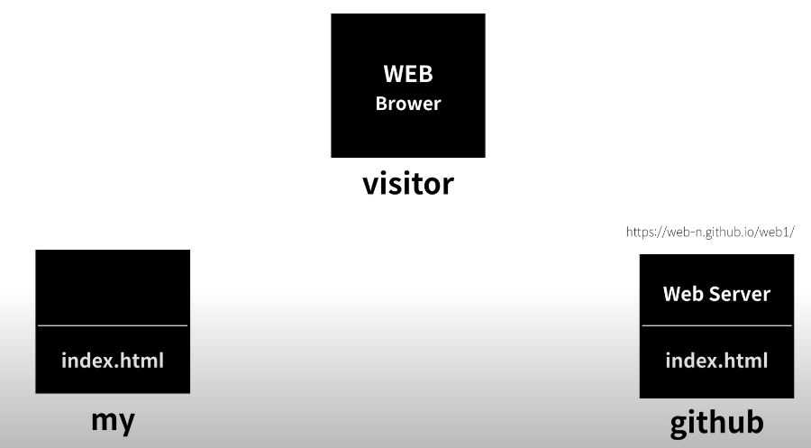

참고로 meta의 charset을 사용해서 웹파일 인식형태를 조절할 수 있다
예를 들면 utf-8 같은게 있겠다.
웹 호스팅을 해주지 않으면, 방문자가 웹 브라우저를 지니고 있어도
웹 페이지를 원격으로 볼 수 없다. 때문에
해서 웹 호스팅 사이트인 GitHub 에다가 웹페이지 파일을 업로드하고

이 저장소를 웹 서버로도 쓰고 싶다고 활성화 시키면
GitHub에서 주소를 제공 해줄 것이고
방문자가 브라우저 주소창에 그 주소를 입력하면
웹 서버가 해당 index.html파일을 읽어서
방문객의 웹 브라우저 쪽에 전달을 하여 방문객의 웹 브라우저에서
파일이 열리면서 보여줄 수 있게 된다
이처럼 인터넷에 접속해 있는 컴퓨터 한대 한대를 host 라 칭하고
그리고 인터넷에 접속해 있는 컴퓨터를 제공하는 사업을 hosting 사업이라 칭한다
근데 hosting 사업의 목적이 web sever라면 web hosting 이라 칭한다
만약 html파일 만을 서비스 하고 싶을 때는 static web hosting 이라 부른다
static web hosting 은 무료도 많고 가격도 저렴하다 한
Php나 파이썬, 루비 등을 하게 되면 Dynamic web hosting이 필요할 것이라 함
다른 웹 호스팅 서비스를 검색하는 팁은
'static web hosting' 또는 'free static web hosting'을 검색하기